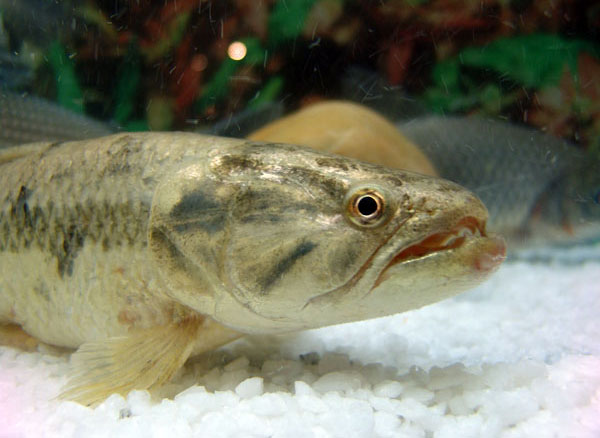
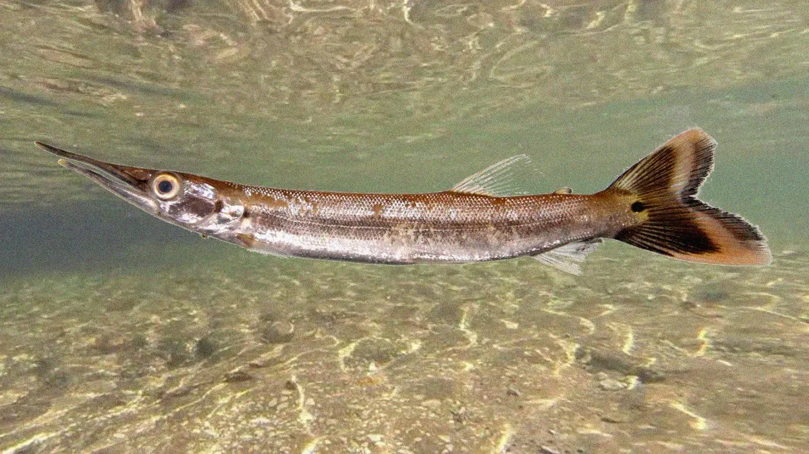

-
Traíra
A Traíra é um peixe de escamas. Possui corpo cilíndrico, boca grande, olhos grandes e nadadeiras arredondadas, exceto a dorsal. Sua coloração é marrom ou preta manchada de cinza. Possui dentes poderosos e afiadíssimos. Sua língua é áspera ao tato, o que a diferencia do trairão, que apresenta a língua lisa. É um peixe utilizado em açudes e represas como controlador de populações demasiadamente prolíficas, como tilápias e piabas. Tem alta resistência a locais com pouco oxigênio. Apesar do excesso de espinhas, em algumas regiões é bastante apreciado como alimento. Pode atingir 60 cm de comprimento e 4 K de peso.

-
Bicuda
O peixe Bicuda é um peixe de escamas, com corpo alongado e roliço. Possui boca grande, pontuda e bastante dura. Sua coloração varia de espécie para espécie, normalmente, o dorso é cinza com os flancos e o ventre prateados. Em seu corpo, há também pintas pretas. Sua nadadeira dorsal está localizada na metade posterior do corpo e seu último raio, assim como na anal, é um pouco mais comprido. Já as nadadeiras pélvica e anal apresentam a margem preta e a caudal uma faixa preta nos raios medianos. O Bicuda pode atingir cerca de 1 m de comprimento total e 6 kg de peso.

-
Pirarucu
Natural da Amazônia, o pirarucu (Arapaima gigas) é um dos maiores peixes de água doce do planeta, podendo ultrapassar 3 metros de comprimento e pesar em torno de 200 quilos. Nos últimos anos, pescadores têm registrado a presença desse “gigante” com cada vez mais frequência no rio Grande, corpo d’água pertencente à bacia do alto rio Paraná que banha os Estados de São Paulo e Minas Gerais.
-
Pirarucu
Tilápia
Tucunaré
Dourado